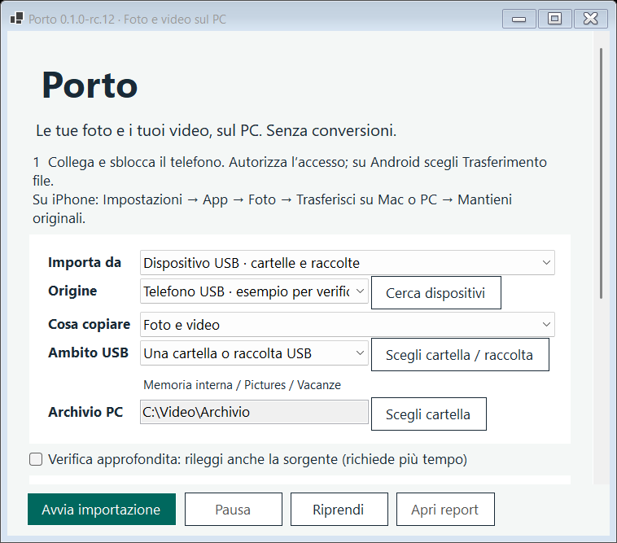

Foto e video.
Copie verificate sul PC.
Scegli solo foto, solo video o entrambi. Copia da un dispositivo USB compatibile o da un album esportato, confrontando le copie già presenti.
Scarica Porto per WindowsVersione candidata 0.1.0-rc.10 per Windows 11 x64.
Archivio ZIP con runtime incluso. Gratuito, senza account nell’app.

Tre passaggi
per iniziare.
Il trasferimento e i confronti avvengono sul tuo PC. Nessun Mac o strumento di sviluppo richiesto.
- Estrai lo ZIP e apri Porto.exe.Chiudi la vecchia app e usa una nuova cartella per il programma. Conserva l’archivio con file, report e .porto.
- Scegli origine e contenuti.Telefono / dispositivo USB oppure Cartella / album esportato. Seleziona Solo foto, Solo video o Foto e video. Su USB puoi scegliere una cartella con le sottocartelle. Guida e limiti.
- Scegli Archivio PC e avvia.Usa la stessa cartella delle prove precedenti per riutilizzare copie identiche verificate. Porto conserva tutti i file precedenti, copia quelli mancanti e salva il report. La destinazione deve essere locale NTFS.
Una copia controllata.
- Byte ricevuti conservati senza conversioni o ricompressioni.
- SHA-256 confrontato con una rilettura del file salvato.
- Verifica approfondita opzionale tramite seconda lettura della sorgente.
- Ripresa con confronto del contenuto, preservando i duplicati distinti dell’inventario.
- Nessuna modifica o cancellazione sul telefono e nessuna sovrascrittura di file esistenti.
Un report sincero.
Importati, già presenti verificati, esclusi, ambigui, mancanti noti, errori e file ancora da completare. Un controllo finale verifica che l’inventario della sorgente sia rimasto stabile. Disponibile come testo e JSON, tutto locale.
Il confronto distingue copie precedenti riutilizzate, conservate e da verificare. Cartella verificata non significa intera libreria Foto verificata.
Originali, Live Photos e video modificati
Per scegliere soltanto i video usa la raccolta Video di Foto, poi esporta gli originali non modificati. Porto verifica la cartella, senza certificare la selezione sul telefono. Le vecchie copie non riutilizzate restano al loro posto: non sono automaticamente Live Photo. Versioni convertite o modificate con byte diversi restano distinte. La modalità USB è ancora disponibile, ma può includere componenti Live Photo nelle risorse aggiuntive.
iCloud, Internet e privacy
Porto funziona offline, non chiede Apple ID e non carica foto o video online. Non scarica originali da iCloud o Google Foto né cambia impostazioni. Un originale solo cloud può non comparire nell’inventario, e il numero degli elementi mancanti potrebbe non essere disponibile.
Compatibilità, firma e componenti necessari
Video MOV/MP4/M4V; foto JPEG, PNG statico e HEIF/HEIC HEVC nei profili riconosciuti. Altri formati e file incerti restano segnalati. Non è compatibilità universale con ogni telefono. Destinazione Windows 11 x64 e cartella locale NTFS. Windows ARM, exFAT, rete e percorsi reindirizzati non supportati in questa candidata. Eventuali componenti Apple vanno ottenuti dalle fonti ufficiali. Eseguibile non firmato: le protezioni Windows possono mostrare avvisi o impedirne l’avvio. Non disattivare antivirus, SmartScreen o altre protezioni.
Spazio, ripresa e file temporanei
Pausa e Riprendi conservano il lavoro e ripetono i confronti. I temporanei associabili vengono completati solo dopo verifica integrale del prefisso; quelli divergenti restano conservati. I video precedenti non vengono sovrascritti o eliminati. Mantieni .porto insieme all’archivio. In modalità cartella vengono cercate anche copie dei formati supportati non registrate, ma un catalogo perso perde informazioni sulla storia dei tentativi.
Che cosa è stato verificato
Compilazione e avvio UI su Windows 11 x64; copie sintetiche con corruzione, disconnessione, collisioni, arresti nei passaggi critici e recupero. Prove avversarie su conteggi, ripresa, worker, cataloghi e report; anche clip MOV, MP4 e M4V generate localmente. Inventario di 50.000 elementi, 2.000 copie effettive con secondo passaggio senza duplicati e un file sintetico oltre 4 GB scritto e riletto su NTFS. Nuove prove su foto, filtri, sottocartelle USB e conservazione di 193 copie sintetiche precedenti. Simulazione di 250 GB logici, senza scrivere quel volume su disco.